Matemática Discreta
Nessa seção voce irá aprender sobre Lógica Formal e Grafos
Introducão à Grafos
Grafos
TEORIA DOS GRAFOS
A Teoria dos Grafos é uma área bastante recente da Matemática e uma das poucas que podemos datar exatamente como e quando começou. O conhecimento sobre grafos é relevante, dentre outras áreas, para a Ciência da Computação, Engenharia, Indústria e para estudar tópicos mais avançados na Matemática Discreta.
Nesse capítulo veremos:
- O problema que motivou a criação da Teoria dos Grafos: as pontes de Königsberg.
- A definição e os principais elementos de um grafo.
- A classificação de um grafo quanto à conexidade e à existência de ciclos.
- Alguns problemas em que a teoria dos grafos se aplica.
1. As pontes de Königsberg
Veremos agora um problema que levou a criação da Teoria dos Grafos, esse problema surgiu na cidade de Kaliningrado, hoje na Rússia, que, durante muito tempo, se chamou Königsberg. Nasceram em Königsberg os grandes matemáticos Christian Goldbach, que contribuiu para a Teoria dos Números no século 18; e David Hilbert, que atuou em diversas áreas da Matemática nos séculos 19 e 20, mas é principalmente por causa de algumas pontes e de um matemático suíço que Königsberg ganhou relevância na história da Matemática. A cidade cresceu às margens do rio Prególia e, na sua parte central, possui duas ilhas que eram ligadas às margens por algumas pontes
Vejamos na Figura 1, essas pontes que são sinalizadas pelos retângulos escuros.
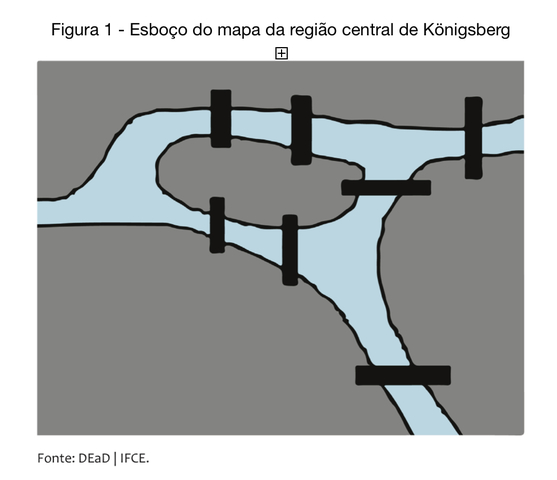Por muito tempo, discutia-se a possibilidade de passear pela cidade passando por todas as sete pontes uma única vez. Chegar a uma ilha, ou a uma margem, por um meio que não fosse uma das pontes, não era aceitável como parte do caminho, assim como também era exigido que cada ponte fosse percorrida totalmente, isto é, ao se entrar em uma delas, só se poderia sair pela outra extremidade. O passeio pode começar em qualquer uma das margens, ou das ilhas, e não precisa terminar onde começou. Por mais que tentassem, os moradores da cidade não conseguiam resolver o problema: sempre se viam na necessidade de atravessar uma ponte repetidamente, ou ficava faltando uma ponte para ser cruzada, mas que não dava para acessar de onde se estava. Isso fez com que muitos acreditassem que o problema fosse impossível, mas não se pode considerar que um problema é impossível só porque não foi resolvido depois de muitas tentativas, não é? Quem colocou uma pedra na situação toda, provando que, de fato, um passeio com as condições pedidas não existe, foi o matemático suíço do século 18 Leonhard Euler. Vejamos como isso foi feito.
Para começar, Euler observou que o percurso realizado dentro de cada ilha ou na margem é irrelevante, a parte significativa de cada rota é a sequência com que as pontes são cruzadas. Com isso, ele reformulou o problema eliminando todas as partes desimportantes, isto é, mantendo apenas uma lista das margens e ilhas e as pontes que as ligam. Como o tamanho da ilha ou da margem não desempenha nenhum papel, podemos representar cada uma dessas porções de terra por um ponto.
Assim, cada ponte pode se trocada por uma linha ligando dois desses pontos. Na Figura 2, temos essencialmente todos os caminhos a serem percorridos (representados pelas linhas brancas).
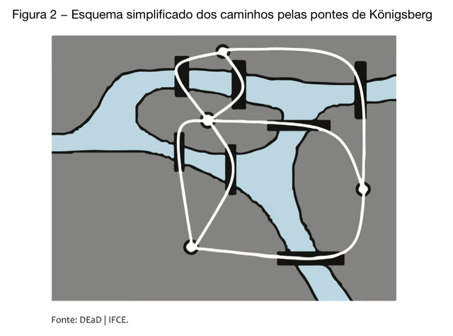Uma vez feito isso, o rio, as ilhas, as margens, ou qualquer outra coisa da cidade, se tornam dispensáveis. Dessa forma, podemos considerar apenas a Figura 3 para pensar no problema das pontes de Königsberg.
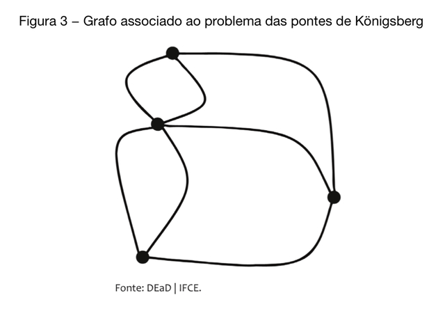Assim, ficamos apenas com o que é significativo. Perceba que cada ponto representa uma porção de terra e cada linha ligando esses dois pontos representa uma ponte, certo? A quantidade de conexões entre dois desses pontos é que é relevante, de modo que poderíamos traçar linhas com outras formas ou posicionar os pontos em outras partes do plano, bem como colocar uma linha que liga dois pontos em outra posição (abaixo ou acima da posição real da ponte).
A próxima observação de Euler sobre os passeios do problema foi a de que, ao se chegar a um dos pontos por uma ponte, só se pode sair desse ponto por uma ponte, de modo que, excetuando-se os pontos inicial e final do passeio, para todos os pontos, a quantidade de vezes que se chega ao ponto é igual à quantidade de vezes que se sai. Por isso, para cada ponto intermediário do passeio, o número de pontes que o toca deve ser par, sendo metade delas as pontes pelas quais se chega ao ponto e igual quantidade de pontes pelas quais se deve sair dele. Dessa forma, a quantidade de linhas, saindo de todos os pontos, exceto eventualmente dois, deve ser par. Porém, de todos os pontos do esquema sai uma quantidade ímpar de linhas (um deles tem cinco pontes e os outros três têm 3 cada um). Assim, teríamos que todos os quatro pontos devem ser começo ou final do passeio, o que é uma contradição e, portanto, o problema das pontes de Königsberg não possui solução.
A solução engenhosa de Euler para esse problema deu origem à Teoria dos Grafos, que é como chamaremos cada um dos esquemas simplificados com pontos e linhas ligando-os sob certas condições.
Note que os números, assim como os grafos, são uma maneira abstrata de tratar um problema com o que efetivamente importa. A mesma abordagem para resolver o problema das pontes poderia ser empregada se, em vez de margens e ilhas, tivéssemos quatro cidades e, no lugar das pontes fossem rodovias ligando-as, ou se, em vez das ilhas, tivéssemos estações de metrô e linhas ligando essas estações, ou átomos e ligações entre esses átomos, certo? Em essência, a situação é a mesma.
2. Grafos e seus principais elementos
No tópico anterior, vimos que Euler simplificou o problema das pontes de Königsberg, representando cada porção de terra por um ponto e cada ponte por uma linha ligando esses pontos. A ideia central foi perceber que o importante era se havia ou não uma ligação entre dois pontos e quantas eram as linhas que saíam de cada ponto. Mais geralmente, cada ponto será chamado de vértice e cada linha ligando dois vértices será chamada de aresta. Uma ideia fundamental aqui é que a forma da linha, de fato, é irrelevante. O que devemos observar, estimado(a) aluno(a), é apenas se há uma linha ligando dois pontos dados. Assim, para formar um esquema como o das pontes de Königsberg, precisamos apenas elencar os pontos que serão os vértices e listar quais deles são ligados entre si. Na situação das pontes, havia mais de uma linha ligando dois pontos, mas não vamos considerar essa possibilidade inicialmente, isto é, consideraremos que entre dois pontos há no máximo uma linha, certo? Um esquema desses será chamado de grafo e consistirá, portanto, de alguns pontos e uma lista de quais deles são ligados entre si. Neste tópico 2, veremos a definição de grafo e seus principais componentes.
Sendo V um conjunto não vazio, uma aresta sobre V é simplesmente um conjunto com exatamente dois elementos de V, os quais são chamados de vértices dessa aresta. Por exemplo, se V = { 1, 2, 3 } , temos que { 2, 3 } é uma aresta de vértices 2 e 3. O conjunto de todas as arestas de V será denotado por V(2) . Assim, para V = { 1, 2, 3 } , temos V 2 = { { 1, 2 } , { 1, 3 } , { 2, 3 } } . Um conjunto de arestas de V é, portanto, qualquer subconjunto de V(2).
A definição de grafos entende-se por:
“ Um conjunto, não vazio e finito, de vértices V e de um conjunto de arestas A com vértices em V. Nesse caso, escrevemos G = (V, A).”
Exemplo 1
Considerando V = {X, Y, Z, W} e A = {{X, Y}, {X, Z}, {X, W}, {Y, Z}, {Z, W}}, temos que G1 = (V, A), primeiro grafo que estamos exemplificando, que possui, nesse caso, quatro vértices e cinco arestas.
Exemplo 2
Se considerarmos V como o conjunto dos estados da Região Nordeste do Brasil e A = {{x, y}; x faz divisa com y}, temos que, no grafo G2 = (V, A)), existem, por exemplo, as arestas {Ceará, Pernambuco} e {Sergipe, Alagoas}, mas {Ceará, Alagoas} não é uma aresta de A.
Observe que a definição de grafo apenas lista alguns elementos para serem vértices e alguns conjuntos com dois elementos para serem arestas. Quando os vértices a e b são tais que existe a aresta {a, b} no grafo, dizemos que a e b são adjacentes e, nesse caso, que a e b são as extremidades dessa aresta, que poderá ser denotada por ab ou ba. Essa é uma das principais informações sobre um grafo. Assim como podemos usar diagramas para representar conjuntos, também podemos usar um esquema gráfico para representar as informações de um grafo. Para tal, colocaremos um ponto para indicar cada vértice e uma curva ligando dois vértices que forem adjacentes. Na Figura 4, temos possíveis representações para o grafo G1 do Exemplo 1.
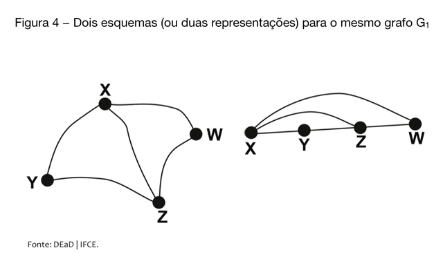Observe que, embora os dois esquemas que compõem a Figura 4 tenham formas diferentes, eles trazem exatamente as mesmas informações de ligação entre os pontos e, portanto, representam o mesmo grafo. Se usarmos a mesma ideia, podemos representar o grafo do Exemplo 2, conforme Figura 5.
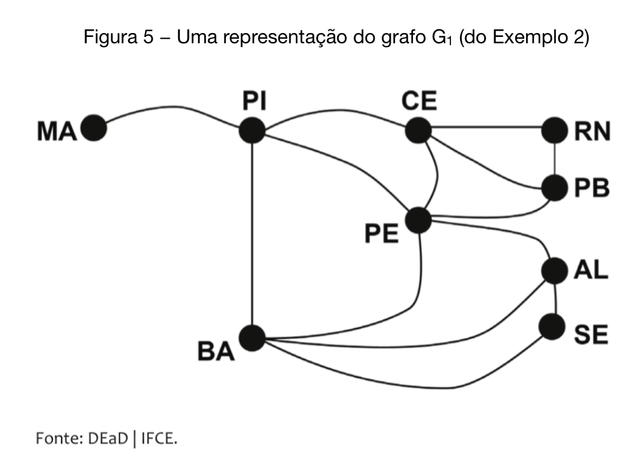Veja que a forma dos estados, o tamanho deles ou sua efetiva posição geográfica não desempenham papel nesse grafo, uma vez que a informação que ele transmite tem a ver com dois estados terem ou não divisa, certo? Podemos usá-lo para perceber, por exemplo, que Paraíba e Alagoas não têm divisa, pois não há uma linha ligando os vértices correspondentes a esses estados.
Um aspecto a ser destacado na definição de grafo é que uma aresta não pode ter extremidades iguais ou várias arestas distintas ligando os mesmos vértices. Há teorias em que essas possibilidades são levadas em conta, mas não vai ser o caso aqui. Tais esquemas são chamados de multigrafos. Os grafos de que esse texto trata são os grafos simples. Quando o conjunto de vértices e de arestas de um grafo estiver claro, podemos simplesmente fazer referência ao grafo G em vez de G = (V, A).
Dado um conjunto V com n elementos, podemos formar Cn,2 subconjuntos de V com exatamente dois elementos, de modo que, se um grafo tem n vértices, ele terá, no máximo, n(n – 1)/2 arestas, isto é, #V( 2) = n(n – 1)/2. Quando um grafo possui essa quantidade de arestas, isto é, quando dois vértices quaisquer são adjacentes, dizemos que o grafo é completo. O complemento de um grafo G consiste do grafo G' cujos vértices são os mesmos de G e cujas arestas são, precisamente, aquelas que faltam para que G seja completo, ou seja, se G = (V, A) é um grafo, seu complemento é o grafo G' = (V, V(2) \ A ).
Para V = {X, Y, Z, W}, temos #V = 4 Um grafo completo com vértices em V deveria ter C 4,2 arestas, isto é, 6 arestas. Para A ={{X, Y}, {X, Z}, {X, W}, {Y, Z}, {Z, W}}, o grafo G1 = (V, A), já apresentado no Exemplo 1, não é completo. Seu complemento é o grafo G'= (V, B) , em que B = {{Y, W}}.
Exemplo 3
Para V = {P, Q, R} e A = {{P, Q}, {P, R}, {Q, R}}, temos que o grafo G3 = (V, A) é completo e, portanto, seu complemento é o grafo G3 = (V, ∅) . Na Figura 6, temos uma representação do grafo G3 (à esquerda) e de seu complemento (à direita).
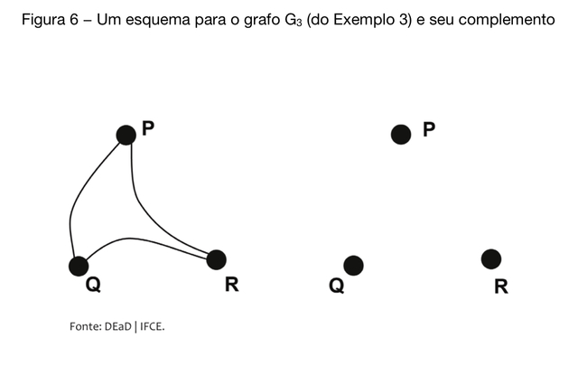Exemplo 4
Para V = {1, 2, 3, 4, 5} e A = {{1, 2}, {1, 4}, {2, 3}, {2, 5}, {3, 4}, {4, 5}}, o grafo G4 = (V, A) não é completo e seu complemento é G'4 = {{1, 3}, {1, 5}, {2, 4}, {3, 5}}. Na Figura 7, temos uma representação do grafo G4 (à esquerda) e de seu complemento (à direita).
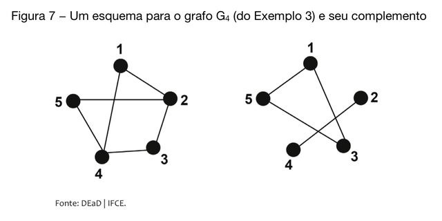Se sabemos quais vértices são adjacentes, então podemos contar quantos vértices são adjacentes a um vértice dado. O conjunto de todos os vértices de um grafo G, que são adjacentes ao vértice x, é chamado de vizinhança de x e denotado por vizG(x). A quantidade de elementos de vizG(x) será chamada de grau do vértice. Mais precisamente, temos a seguinte definição:
“ Seja G = (V, A) um grafo. Se x∈ V , o grau de x em G é o número de vértices que são adjacentes a x, isto é, é a quantidade de elementos do conjunto vizG (x) = { y ∈ V; { x, y } ∈ A } . O grau do vértice x no grafo G será denotado por degG(x) ou, quando não houver confusão, por deg(x). Assim, degG(x) = #vizG(x). O grafo G é dito ser regular se todos os seus vértices possuem o mesmo grau.”
Exemplo 5
No grafo G4 , que apresentamos no exemplo anterior, temos que o grau de vértice é deg(1) = 2, deg(2) = 3, deg(3) = 2, deg(4) = 3 e deg(5) = 2. Assim, G4 não é regular.
Atenção: todo grafo completo é regular, isto é, os seus vértices têm o mesmo grau.
Exemplo 6
Se um grafo com n vértices é completo, então cada vértice é ligado a todos os outros n – 1 vértices, de modo que seu grau será n – 1. Dessa forma, um grafo com n vértices é completo se, e somente se, todos os seus vértices tiverem grau n – 1.
Exemplo 7
Para qualquer, conjunto finito V, o grafo G = (V, ∅) é regular, pois todos os seus vértices possuem grau 0. Esse grafo é o complemento de um grafo completo de vértices em V.
Se considerarmos a aresta xy no grafo G, ela é contada para obter o grau de x e para obter o grau de y, de modo que, se somarmos os graus de todos os vértices de um grafo, estaremos contando todas as arestas duas vezes. Assim, podemos enunciar o seguinte resultado:
“ A soma dos graus de todos os vértices do grafo G = (V, A) é igual a 2.#A.”
Dessa forma, a soma dos graus dos vértices de um grafo é sempre um número par. No caso do grafo do Exemplo 4, que denominamos de G4 , a soma dos graus de todos os vértices é 2.#A = 2.6 = 12, pois o número de elementos de A é 6. Você pode conferir esse resultado somando os graus de cada vértice, como apresentamos no Exemplo 5.
Ainda sobre as características do vértice de um grafo, temos a definição a seguir:
“ Um vértice de um grafo é dito ser isolado quando seu grau for 0 e é dito ser uma folha quando seu grau for igual a 1.”
Exemplo 8
No grafo esquematizado na Figura 8, temos que M e R são vértices isolados, enquanto S, P e T são folhas.
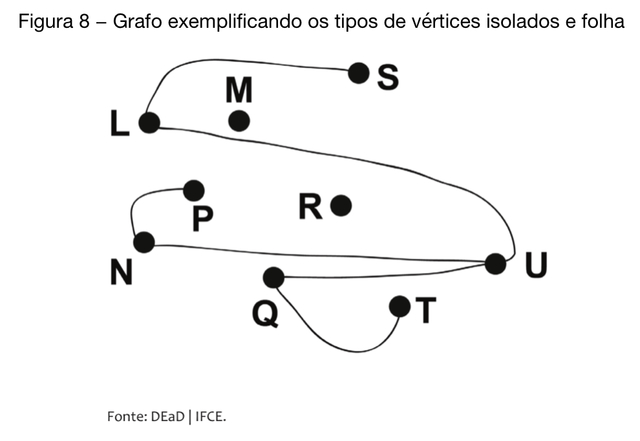3. Caminhos e Conexidade
No tópico 2, vimos que um grafo consiste em um conjunto de pontos interligados por arestas. Você deve recordar que para V = { 1, 2, 3, 4, 5 } e A = { { 1, 2 } , { 1, 4 } , { 2, 3 } , { 2, 5 } , { 3, 4 } , { 4, 5 } }, o grafo que denominamos de G4 = (V, A) tem complemento G'4 = { { 1, 3 } , { 1, 5 } , { 2, 4 } , { 3, 5 } }. Se observarmos os esquemas gráficos de G4 e G'4 , percebemos que podemos conectar dois vértices quaisquer de G4 e usar apenas suas arestas, mas o mesmo não ocorre com G’4 , pois não há como ir do vértice 1 para o vértice 4, usando as arestas do grafo, não é verdade? Vamos colocar isso em termos mais precisos: não há uma sequência de arestas cuja primeira tem 1 como extremidade, já que arestas consecutivas na sequência têm uma extremidade em comum cuja última aresta possui 4 como extremidade. De maneira geral, podemos estabelecer a seguinte definição para um caminho em um grafo.
“ Seja G = (V, A) um grafo. Um caminho em G é qualquer sequência de vértices de G (x1 , x2 , ..., xk) tal que {xi , xi +1} ∈ A , para todo i ∈ { 1, 2, ..., k − 1 } . Nesse caso, os vértices xi e xk são ditos serem extremidades do caminho. Tal caminho pode ser denotado simplesmente por x1, x2, ... , xk . Quando x1 = xk , o caminho é dito ser fechado ou é um circuito.”
Exemplo 9
No grafo G2 , do tópico anterior, cujos vértices são os estados do Nordeste do Brasil, temos que (MA, PI, PE, AL, SE) é um caminho que liga os vértices MA e SE. Dois outros caminhos, ligando esses vértices, são (MA, PI, BA, SE) e (MA, PI, MA, PI, PE, AL, PE, AL, SE, AL, SE).
Exemplo 10
No grafo G4 , temos este caminho fechado ou circuito (1, 2, 3, 4, 1) e, em seu complemento G'4 , não há caminho com extremidades em 2 e 5.
A noção de caminho pode ser usada para estabelecer uma diferença significativa entre G4 e seu complemento. Para quaisquer vértices de G4 , existe um caminho ligando esses vértices enquanto isso não ocorre em G'4 . Os grafos que têm essa propriedade serão chamados de conexos, de acordo com a seguinte definição:
“ O grafo G = (V, A) é dito ser conexo, se, para quaisquer vértices distintos x e y, existir um caminho em G cujas extremidades são x e y.”
De fato, o grafo G4 é conexo, pois podemos estabelecer os seguintes caminhos:
- ligando 1 e 2: (1, 2)
- ligando 1 e 3: (1, 2, 3)
- ligando 1 e 4: (1, 4)
- ligando 1 e 5: (1, 2, 5)
- ligando 2 e 3: (2, 3)
- ligando 2 e 4: (2, 5, 4)
- ligando 2 e 5: (2, 5)
- ligando 3 e 4: (3, 4)
- ligando 3 e 5: (3, 4, 5)
- ligando 4 e 5: (4, 5)
Atenção: Todo grafo completo é conexo
Exemplo 11
Para V = {1, 2, 3, 4} e A = {{1, 2}, {1, 3}, {1, 4}}, temos que G = (V, A) é conexo e seu complemento G4 também é conexo.
Quando fixamos um vértice x de um grafo G e colecionamos todos os outros vértices que podem ser ligados a x e incluímos x na lista, temos o que é chamado de componente de x em G. Uma vez que a justaposição de dois caminhos com uma extremidade em comum é também um caminho, podemos verificar que duas componentes distintas de um grafo são sempre disjuntas e que um grafo é conexo quando ele possui apenas uma componente.
Seja G = (V, A) um grafo. Se ,W é um subconjunto de V, e B é um subconjunto de A que possui apenas arestas que ligam pontos de W, isto é, se B ⊂ W(2) , dizemos que H = (W, B) é um subgrafo de G Assim, um subgrafo de um grafo é uma coleção de vértices e arestas desse grafo que ainda é um grafo. Podemos considerar um caminho de um grafo como seu subgrafo. Também é um subgrafo de G qualquer uma de suas componentes se considerarmos todas as arestas que ligam os seus vértices.
Exemplo 12
Todo grafo G é subgrafo de si próprio e, para qualquer grafo G = (V, A), vale que H = (W, ∅) é um subgrafo de G, para qualquer W ⊂ V.
Exemplo 13
Todo grafo G = (V, A) é um subgrafo de G = (V, V(2))
Exemplo 14
Na Figura 9, temos os esquemas de dois grafos. Se os vértices forem os mesmos, o grafo da esquerda é um subgrafo do da direita. Observe que o da esquerda não é conexo, já o da direita é conexo.
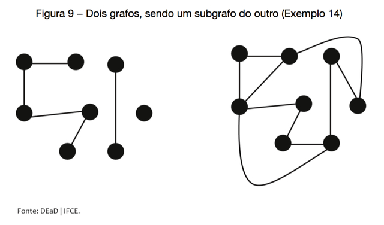Acompanhe o Exemplo 15, no qual observamos as principais propriedades sobre os grafos que definimos até aqui.
Exemplo 15
Considere o grafo esquematizado na figura abaixo.
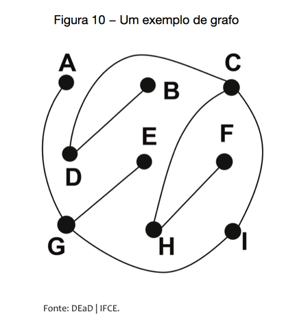Podemos descrevê-lo precisamente, colocando seu conjunto de vértices V = {A, B, C, D, E, F, G, H, I} e suas arestas S = {AG, BD, CD, CH, CI, EG, FH, GI}. Podemos escrever um caminho ligando dois quaisquer desses vértices, de modo que o grafo J = (V, S) é conexo. Os vértices A, B, E e F têm grau 1, os vértices ,D, H e I têm grau 2, já os vértices C e G têm grau 3.
Se colocarmos W = {A, C, F, G, H, I} e T = {AG, CI, CH, FH, GI}, temos que (W, T) é um subgrafo de J. Se colocarmos X = {A, B, C, D}, o grafo (X, T) não é um subgrafo de J, pois, embora tenhamos considerado apenas vértices de J e arestas de J, o par (X, T) não é um grafo. Por fim, observe que o grafo J pode ser esquematizado como na Figura 11, uma vez que os vértices são os mesmos e a informação fundamental, que é a de quais vértices estão ligados, é preservada, reforçando que o grafo, mais do que sua representação, é um conjunto de vértices e algumas ligações entre eles.
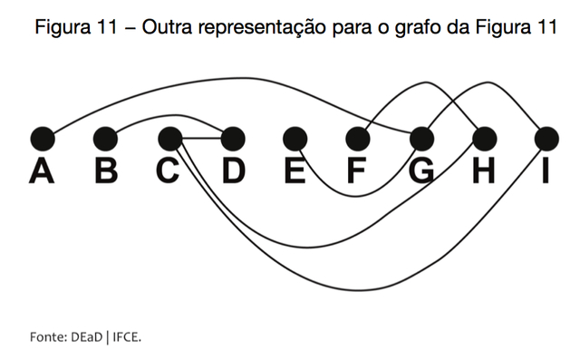Em um grafo G, um circuito que não tem arestas repetidas é dito ser um ciclo. Alternativamente, podemos entender um ciclo em um grafo G como um subgrafo de G, que é regular e no qual todos os vértices têm grau 2. Quando um grafo não possui ciclos, dizemos que ele é uma floresta. Se um grafo é conexo e não possui ciclos, ele é dito ser uma árvore.
Exemplo 16
O grafo J do exemplo anterior não possui ciclos e é conexo, suas folhas são os vértices A, B, E e F.
Exemplo 17
Considere o grafo esquematizado na figura a seguir:
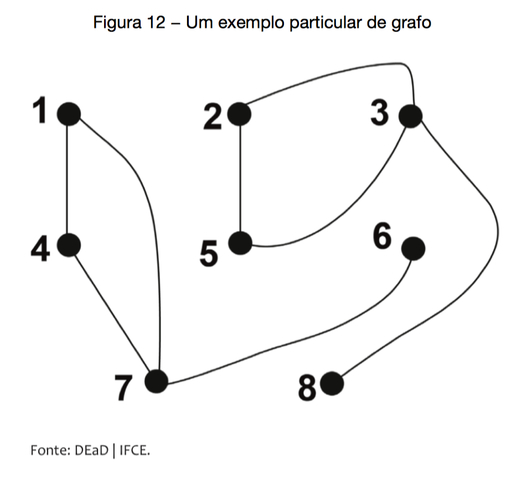Temos que esse é um grafo não conexo, no qual podemos destacar os ciclos (1, 4, 7, 1) e (2, 3, 5, 2). Você deve recordar a que, nesse caso, esse grafo não possui vértices isolados. O subgrafo H = ({1, 4, 6, 7}, {14, 17, 47, 67} é uma das componentes desse grafo. As folhas desse grafo são os vértices 6 e 8, uma vez que esses vértices possuem grau 1.
Exemplo 18
Todo grafo completo com, no mínimo 3 vértices, possui ciclos. Se G = (V, A) e H = (W, B) são grafos, então é de imediata verificação que (V ∪ W, A ∪ B) é um grafo, o qual chamamos de união de G e H. Cada grafo pode ser escrito de forma única como união de suas componentes. Dessa forma, perceba que uma floresta pode ser descrita como união de árvores.
4. Aplicação da Teoria dos Grafos
Neste tópico, encerraremos a parte de Grafos, aplicando alguns conceitos da Teoria dos Grafos a problemas que não possuem a palavra grafo em seu enunciado, mas, como será visto, associar a situação a um grafo, transferindo o problema, fará com que consigamos encontrar uma solução de forma bem simples. Vejamos esses problemas.
Problema 1
Considere o seguinte arranjo de cinco retângulos com alguns pontos marcados nos seus lados onde há passagens entre os retângulos
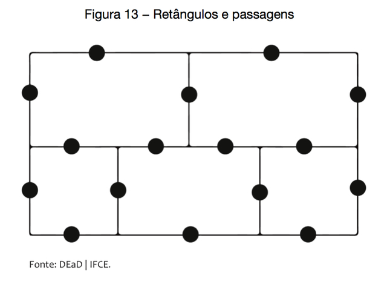É possível desenhar uma linha contínua, isto é, sem tirar a caneta do papel, que atravesse todas as passagens dessa figura uma única vez?
Solução
Para iniciar a resolução desse problema, podemos associar cada retângulo a um ponto e ligar dois desses pontos com uma linha para cada passagem que houver entre eles. Colocamos também um ponto para representar a região externa E, obtendo a Figura 14.
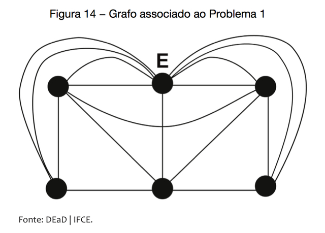Assim como no caso das pontes de Königsberg, podemos observar que a quantidade de linhas que saem de cada vértice que não é extremidade da linha deve ser par. Mas temos o ponto E, de onde saem 9 linhas, três pontos de onde saem 5 linhas, e dois de onde saem 4 linhas. Assim, o ponto E e outros três deveriam ser extremidades do caminho, mas ele só tem um começo e um fim, de modo que uma linha, com as condições pedidas, não pode ser traçada.
Problema 2
Mostre que, em um grupo qualquer de n pessoas, existem pelo menos duas que possuem o mesmo número de conhecidos.
Solução
Supondo que a relação de conhecer outra pessoa seja recíproca, isto é, que, se A conhece B, então B conhece A, podemos considerar n pontos P1 , P2 , …, Pn no plano e linhas entre os pontos Pi e Pj para indicar que a pessoa Pi conhece a pessoa Pj. Dessa forma, temos um grafo com n vértices e algumas arestas. A quantidade de pessoas que Pi conhece é exatamente o grau de Pj . Com essa descrição, o problema se torna o de provar que, em um grafo qualquer, existem pelo menos dois vértices com o mesmo grau. Como são n vértices, as possibilidades de graus são 0, 1, 2, ... n − 1 . Se algum vértice tem grau 0, isto é, se há algum vértice isolado, então nenhum vértice tem grau n – 1, pois isso significaria que esse vértice está ligado a todos os outros, o que não ocorre. Assim, nesse caso, teríamos como possibilidades de grau para os vértices os números 0, 1, 2, …, n – 2, que são n – 1 números. Assim, a função que associa cada vértice ao seu grau tem domínio com n elementos e contradomínio com n – 1 elementos e, pelo Princípio de Dirichlet, não pode ser injetiva, isto é, existem dois vértices com o mesmo grau. Por outro lado, se for o caso de não haver vértices isolados, as possibilidades de grau passam a ser 1, 2, …, n – 1, que são n – 1 números. Assim, também, nesse caso, a função que associa cada vértice ao seu grau tem domínio com n elementos e contradomínio com n – 1 elementos e, portanto, não pode ser injetiva, isto é, existem dois vértices com o mesmo grau. Dessa forma, analisando todas as possibilidades, vemos que há dois vértices com o mesmo grau. Voltando ao problema inicial, isso significa que há pelo menos duas pessoas que têm a mesma quantidade de conhecidos em qualquer grupo.
Problema 3
São marcados 15 pontos no plano. É possível ligar esses pontos de tal forma que, ao final do processo, cada ponto esteja ligado a exatamente 5 outros pontos?
Solução
Se considerarmos o grafo cujos vértices são os pontos dados e cujas arestas sejam as ligações entre esses pontos, uma marcação como a pedida no problema consiste em um grafo regular onde cada vértice tem grau 5. Nesse caso, por um lado, a soma de todos os graus seria 15.5, isto é, 75. Por outro lado, a soma dos graus de todos os vértices de um grafo é igual ao dobro do número de arestas, isto é, teríamos 75 = 2.#A, o que nunca ocorre, uma vez que 75 é ímpar. Assim, é impossível traçar linhas com as características do enunciado.
Problema 4
Em uma festa, os convidados se cumprimentaram com apertos de mão. Mostre que a quantidade de pessoas que apertaram mãos um número ímpar de vezes é par.
Solução
Se considerarmos o grafo em que cada ponto representa um convidado da festa e uma aresta entre dois pontos significando que os convidados correspondentes se cumprimentaram, temos que o grau de cada ponto é exatamente a quantidade de vezes que a pessoa correspondente participou de um aperto de mãos. Assim, o problema se torna o de provar que, em qualquer grafo, a quantidade de vértices que têm grau ímpar é um número par. Se somarmos os graus de todos os vértices de grau par, obteremos um número par. Como a soma de todos os graus é um número par, concluímos que a soma dos graus de todos os vértices que têm grau ímpar é um número par também. A soma de dois números ímpares é um número par. Observe que, se a quantidade de vértices de grau ímpar fosse ímpar, esses vértices poderiam ser agrupados de dois em dois, resultando em soma par, e sobraria um vértice de grau ímpar, resultando em soma total sendo ímpar, o que nunca ocorre em nenhum grafo. Portanto, em qualquer grafo, a quantidade de vértices que possuem grau ímpar deve ser um número par, o que demonstra o problema.
Problema 5
As cidades de um país são ligadas por estradas e é possível ir de uma cidade a qualquer outra usando essas estradas, mesmo que atravessando outras cidades no percurso. Mostre que, se a quantidade de estradas que saem de cada cidade é um número par, então existe uma cidade no país em que é possível sair e voltar passando por todas as estradas uma única vez.
Solução
Consideremos o grafo G que consiste de um vértice para cada cidade do país e uma aresta ligando dois desses pontos quando houver uma estrada ligando as cidades correspondentes. Como a quantidade de estradas que sai de cada cidade é par, temos que o grau de cada vértice de G é par. Sair de uma cidade e voltar para ela sem repetir estradas consiste em exibir um caminho fechado que não repete arestas. Assim, o problema consiste em, dado um grafo conexo G, em que todos os vértices têm grau par, mostrar que é possível exibir um caminho fechado, isto é, um circuito em G que não possui arestas repetidas, ou seja, um ciclo, que passa por todas as arestas. Comecemos o caminho num determinado vértice P e sigamos segundo uma aresta não usada para outro vértice até regressar de novo a P. Note que isso é sempre possível, já que cada vértice, aonde chegamos, possui necessariamente uma saída, exceto o vértice P. Obtemos, assim, um circuito. Se todas as arestas forem usadas nesse processo, teríamos o caminho desejado. Se houve arestas não usadas, a conexidade do grafo diz que, nesse caminho, há um vértice onde outra aresta podia ser tomada. Denotamos esse vértice por Q. Podemos, dessa forma, chegar a Q pelo caminho obtido na primeira etapa e sair de Q por uma aresta que não foi usada previamente. Como grau de Q é par, é possível regressar a Q por outra aresta que não tinha sido tomada no caminho original. Se todas as arestas forem agora utilizadas, encontraríamos um circuito com as condições desejadas, partindo de P e, procedendo como inicialmente até Q, em seguida, tomamos o caminho adicional que vai de Q a Q, e regressamos a P como tínhamos feito no primeiro caminho. Caso ainda sobrem arestas por percorrer, repetimos o processo. Como a quantidade de arestas é finita, esses passos conduzirão a uma solução para o problema.
Problema 6
Hamilton saiu de Londres e conheceu várias cidades pelo mundo, regressando a Londres no final da jornada. Os deslocamentos entre as cidades foram feitos sempre de avião e em cada bilhete aparecia o nome da origem e do destino da viagem apenas uma vez. Algumas cidades foram visitadas mais de uma vez, embora nenhum trecho entre duas cidades foi repetido. Mostre que o número total de vezes em que aparece o nome de uma cidade qualquer nos bilhetes de Hamilton é par.
Solução
Nesse problema, se associarmos cada cidade visitada por Hamilton a um ponto e ligarmos dois desses pontos quando ele realizar um voo entre elas, temos que o grafo correspondente admite um caminho fechado que passa por todos os vértices. A quantidade de vezes em que uma cidade aparece nos bilhetes é exatamente o grau do vértice correspondente. Assim, nosso problema passa a ser o de mostrar que, se um grafo conexo G admite um circuito que passa por todas as arestas uma única vez, o grau de todos os vértices é par. Mas isso é bem simples, pois, se o grafo admite um caminho com as propriedades dadas, é verdade que, em cada vértice, esse caminho deve chegar por uma aresta e partir por outra diferente. Assim, o número de arestas que se liga em cada vértice tem que ser par.
Exercícios
Agora teste o seu grau de aproveitamento do conteúdo resolvendo os exercícios a seguir
GRAFOS
1. Qual alternativa representa as arestas do grafo abaixo?
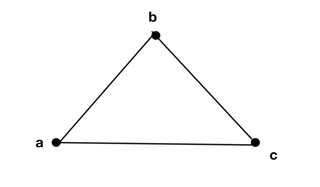- a) A = {ab, bc, ca, cb}
- b) A = {ab, ca}
- c) A = {ab, bc, ca}
- d) A = {ab, cb, ac, ba}
2. Qual alternativa representa as arestas do grafo abaixo?
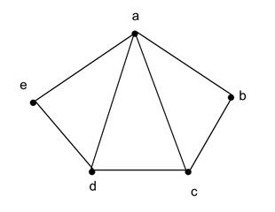- a) A = {ab, bc, cd, de, ba, ac, ed}
- b) A = {ab, bc, ac, cd, ad, ca, ae}
- c) A = {ab, ba, ac, ed, ad, de, ae}
- d) A = {ab, bc, ac, cd, ad, de, ae}
3. Qual alternativa representa as arestas do grafo abaixo?
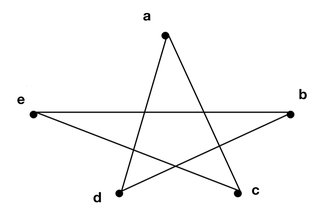- a) A = {ac, ad, ad, be, ec}
- b) A = {ac, ad, bd, be, ca}
- c) A = {ac, ad, bd, ed, ec}
- d) A = {ac, ad, bd, be, ec}
4. Para V = {a, b, c, d, e} e A = {ab, ae, bc, cd, de}, o grafo G4 = {V, A} não é completo. Assinale a alternativa que corresponde ao seu complemento:

- a) G'4 = {ac, ad, be, bd, ce}
- b) G'4 = {ac, ad, bd, be, ca}
- c) G'4 = {ac, ad, bd, ed, ec}
- d) G'4 = {ac, ad, bd, be, ec}
5. Dado o seguinte grafo G5 = {V, A} responda as seguintes questões:
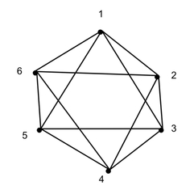- 1º - Quantos graus tem o vértice 3?
- a) 3
- b) 4
- c) 2
- d) 1
- 2º - Pode-se dizer que o grafo acima é regular?
- a) Sim, pois é também um grafo completo
- b) Não, pois não é um grafo completo.
- c) Sim, porém não é um grafo completo
- d) Não, porém é um grafo completo
- 3 º - Qual das alternativas corresponde ao grafo complemento do grafo dado acima?
- a) G’5 = {{1,3}, {2,5}, {3,6}}
- b) G’5 = {{1,4}, {2,4}, {3,4}}
- c) G’5 = {{1,3}, {2,6}, {3,6}}
- d) G’5 = {{1,4}, {2,5}, {3,6}}
6. Dado o seguinte grafo, responda as seguintes questões:
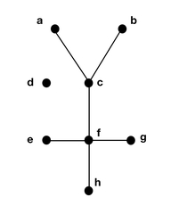- 1º - Quais vértices não são ditos isolados?
- a) Va , Vd , Vh , Ve
- b) Va , Vc , Vd , Ve
- c) Va , Vc , Vh , Ve
- d) Va , Vc , Vh , Vd
- 2º - Quais vértices são ditos folhas?
- a) Va , Vb , Ve , Vg , Vh
- b) Va , Vd , Ve , Vc , Vh
- c) Vf , Vb , Vc , Vg , Vh
- d) Va , Vb , Vd , Vg , Vf
7. Sobre o grafo a seguir, é correto afirmar que:
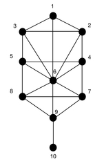- a) É um grafo conexo; completo; irregular; possui um vértice folha.
- b) É um grafo conexo; incompleto; irregular; não possui vértice folha.
- c) Não é conexo; completo; regular; possui um vértice folha.
- d) É um grafo conexo, completo; regular; possui um vértice folha.
Gabarito
Confira suas respostas
- 1) Resposta: c) A = {ab, bc, ca}
- 2) Resposta: d) A = {ab, bc, ac, cd, ad, de, ae}
- 3) Resposta: d) A = {ac, ad, bd, be, ec}
- 4) Resposta: a) G'4 = {ac, ad, be, bd, ce}
- 5) Respostas:
- 1º - b) 4
- 2º - c) Sim, porém não é um grafo completo
- 3º - d) G’5 = {{1,4}, {2,5}, {3,6}}
- 6) Respostas:
- 1º - c) Va , Vc , Vh , Ve
- 2º - a) Va , Vb , Ve , Vg , Vh
- 7) Resposta: a) É um grafo conexo; completo; irregular; possui um vértice folha.